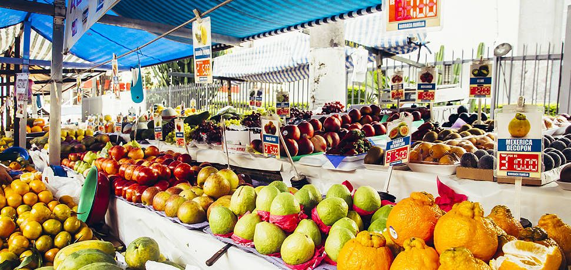

Seleção Cuidadosa
Cada produto é escolhido individualmente, garantindo frescor e qualidade em toda a compra.
Nossa essência
Paixão pela terra, respeito pelas pessoas e compromisso com a qualidade em cada fruta, verdura e produto de granja.

Como começou
A Adriana Hortifrutti nasceu do desejo de levar para as famílias de Fortaleza o que há de melhor na horta e na granja: alimentos frescos, saudáveis e selecionados com todo cuidado, todos os dias.
Começamos pequenos, com a mesma dedicação que carregamos até hoje: escolher pessoalmente cada fruta, cada verdura, cada produto, para garantir que só chegue à sua mesa aquilo que nós mesmos gostaríamos de consumir.
Com o tempo, ganhamos a confiança de centenas de famílias cearenses, e seguimos crescendo com o mesmo propósito de sempre: qualidade, frescor e um atendimento humano e próximo.
Missão, Visão e Valores
Oferecer frutas, verduras e produtos de granja frescos e de alta qualidade, facilitando o acesso a uma alimentação saudável para as famílias de Fortaleza.
Ser a referência em hortifrúti na cidade de Fortaleza, reconhecida pela qualidade dos produtos, pela confiança e pelo atendimento humanizado.
Frescor, honestidade, respeito ao cliente, valorização do produtor local e compromisso com a qualidade em cada entrega.
Nossos diferenciais
Cada produto é escolhido individualmente, garantindo frescor e qualidade em toda a compra.

De frutas a produtos de granja, você encontra tudo que precisa em um só lugar, sem complicação.

Trabalhamos com fornecedores de confiança para garantir a qualidade dos produtos de granja.